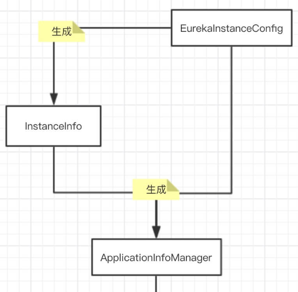
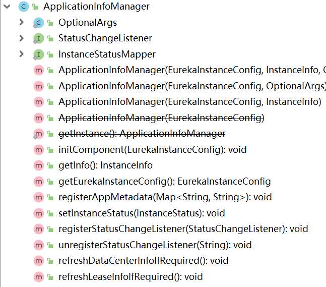

在Eureka注册中心的启动过程中，创建了一个ApplicationInfoManager对象，这是Eureka中的一个应用信息管理组件：
applicationInfoManager = new ApplicationInfoManager(
instanceConfig, new EurekaConfigBasedInstanceInfoProvider(instanceConfig).get());

本章，我们就来看看ApplicationInfoManager和InstanceInfo的底层实现。
InstanceInfo代表了Eureka应用实例信息。Eureka-Client 向 Eureka-Server 注册该对象信息，注册成功后，可以被其它 Eureka-Client 发现。
InstanceInfo包含了非常多的参数，它的构造依赖EurekaInstanceConfig。所以，Eureka采用了设计模式里的Builder模式进行InstanceInfo对象的构造，Builder模式非常适合这种复杂对象的构造。
具体的构造由EurekaConfigBasedInstanceInfoProvider来完成：
new EurekaConfigBasedInstanceInfoProvider(instanceConfig).get()
我们来看下它的get方法：
private final EurekaInstanceConfig config;
private InstanceInfo instanceInfo;
public synchronized InstanceInfo get() {
if (instanceInfo == null) {
// 创建租约信息构建器，并设置属性
LeaseInfo.Builder leaseInfoBuilder = LeaseInfo.Builder.newBuilder()
.setRenewalIntervalInSecs(config.getLeaseRenewalIntervalInSeconds())
.setDurationInSecs(config.getLeaseExpirationDurationInSeconds());
// 创建VIP地址解析器
if (vipAddressResolver == null) {
vipAddressResolver = new Archaius1VipAddressResolver();
}
// 创建应用实例Buidler
InstanceInfo.Builder builder = InstanceInfo.Builder.newBuilder(vipAddressResolver);
// 设置应用实例编号
String instanceId = config.getInstanceId();
DataCenterInfo dataCenterInfo = config.getDataCenterInfo();
if (instanceId == null || instanceId.isEmpty()) {
if (dataCenterInfo instanceof UniqueIdentifier) {
instanceId = ((UniqueIdentifier) dataCenterInfo).getId();
} else {
instanceId = config.getHostName(false);
}
}
// 获得主机名
String defaultAddress;
if (config instanceof RefreshableInstanceConfig) {
// Refresh AWS data center info, and return up to date address
defaultAddress = ((RefreshableInstanceConfig) config).resolveDefaultAddress(false);
} else {
defaultAddress = config.getHostName(false);
}
// fail safe
if (defaultAddress == null || defaultAddress.isEmpty()) {
defaultAddress = config.getIpAddress();
}
// 设置应用实例的属性
builder.setNamespace(config.getNamespace())
.setInstanceId(instanceId)
.setAppName(config.getAppname())
.setAppGroupName(config.getAppGroupName())
.setDataCenterInfo(config.getDataCenterInfo())
.setIPAddr(config.getIpAddress())
.setHostName(defaultAddress) // 主机名
.setPort(config.getNonSecurePort())
.enablePort(PortType.UNSECURE, config.isNonSecurePortEnabled())
.setSecurePort(config.getSecurePort())
.enablePort(PortType.SECURE, config.getSecurePortEnabled())
.setVIPAddress(config.getVirtualHostName()) // VIP 地址
.setSecureVIPAddress(config.getSecureVirtualHostName())
.setHomePageUrl(config.getHomePageUrlPath(), config.getHomePageUrl())
.setStatusPageUrl(config.getStatusPageUrlPath(), config.getStatusPageUrl())
.setASGName(config.getASGName())
.setHealthCheckUrls(config.getHealthCheckUrlPath(),
config.getHealthCheckUrl(), config.getSecureHealthCheckUrl());
// 应用初始化后是否开启：不开启-应用实例处于STARTING状态；开启-应用实例处于UP状态
if (!config.isInstanceEnabledOnit()) {
InstanceStatus initialStatus = InstanceStatus.STARTING;
LOG.info("Setting initial instance status as: " + initialStatus);
builder.setStatus(initialStatus);
} else {
LOG.info("Setting initial instance status as: {}. This may be too early for the instance to advertise "
+ "itself as available. You would instead want to control this via a healthcheck handler.",
InstanceStatus.UP);
}
// 设置 应用实例构建器 的 元数据( Metadata )集合
for (Map.Entry<String, String> mapEntry : config.getMetadataMap().entrySet()) {
String key = mapEntry.getKey();
String value = mapEntry.getValue();
builder.add(key, value);
}
// 基于Builder模式，创建应用实例对象
instanceInfo = builder.build();
// 设置应用实例的租约信息
instanceInfo.setLeaseInfo(leaseInfoBuilder.build());
}
return instanceInfo;
}
可以看到，InstanceInfo应用实例对象的创建是基于InstanceInfo.Builder这个Builder构建器：
public static final class Builder {
//...
private InstanceInfo result;
private final VipAddressResolver vipAddressResolver;
private Builder(InstanceInfo result, VipAddressResolver vipAddressResolver) {
this.vipAddressResolver = vipAddressResolver;
this.result = result;
}
public static Builder newBuilder() {
return new Builder(new InstanceInfo(), LazyHolder.DEFAULT_VIP_ADDRESS_RESOLVER);
}
public static Builder newBuilder(VipAddressResolver vipAddressResolver) {
return new Builder(new InstanceInfo(), vipAddressResolver);
}
//...
}
最终的InstanceInfo应用实例的构造完成是在调用InstanceInfo.Builder.build()方法时：
public InstanceInfo build() {
if (!isInitialized()) {
throw new IllegalStateException("name is required!");
}
return result;
}
builder对象针对InstanceInfo实例的各种set方法进行了一些处理，去set各种需要的属性和配置，设置完成后就完成了最终的一个复杂InstanceInfo应用实例对象的构造。比如：
public Builder setNamespace(String namespace) {
this.namespace = namespace.endsWith(".")
? namespace
: namespace + ".";
return this;
}
应用实例InstanceInfo构建完成后，会保存到ApplicationInfoManager中。ApplicationInfoManager，顾名思义，就是一个应用信息管理器。
因为InstanceInfo就是一个单纯的POJO，不带任何业务行为，所以需要一个外部组件对它进行管理，所以就有了ApplicationInfoManager：
public class ApplicationInfoManager {
// 单例
private static ApplicationInfoManager instance = new ApplicationInfoManager(null, null, null);
// 状态变更监听器集合
protected final Map<String, StatusChangeListener> listeners;
// 应用实例状态匹配
private final InstanceStatusMapper instanceStatusMapper;
// 应用实例信息
private InstanceInfo instanceInfo;
// 应用实例配置
private EurekaInstanceConfig config;
//...
public ApplicationInfoManager(EurekaInstanceConfig config, InstanceInfo instanceInfo, OptionalArgs optionalArgs) {
this.config = config;
this.instanceInfo = instanceInfo;
this.listeners = new ConcurrentHashMap<String, StatusChangeListener>();
if (optionalArgs != null) {
this.instanceStatusMapper = optionalArgs.getInstanceStatusMapper();
} else {
this.instanceStatusMapper = NO_OP_MAPPER;
}
// Hack to allow for getInstance() to use the DI'd ApplicationInfoManager
instance = this;
}
//...
}
可以看到，ApplicationInfoManager提供了很多管理InstanceInfo的方法：

本章，我介绍了InstanceInfo应用实例，它的特点就是利用了Builder设计模式 进行对象的构造。对于InstanceInfo对象的管理，Eureka则采用了一个ApplicationInfoManager对象。对于InstanceInfo应用实例信息，后面在构造EurekaClient对象时还会用到。